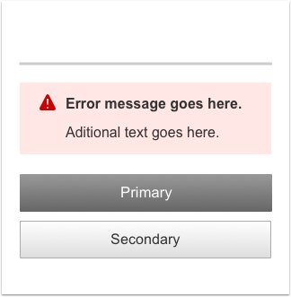

Messaging and Notifications
Visual Specifications
There are four types of page-level messages: Error, Warning, Success, and Informational.
Messages typically remain on screen until the user navigates away from or refreshes the page. If the user continues to interact with the form after successful completion of an action, it may be necessary to have the message disappear after five seconds.
The most common placement for these types of messages is 20px below the line, under the main heading.

If the form is very long, the message can be placed directly above the buttons so the user can view the message without having to scroll to the top.
L, M, S
XS

Other types of messages and notifications
Information unavailable, warning, or zero data state

Overlay messaging
L, M, S

XS

Examples
Page level message or notification example
Information unavailable

Loading
Page failure on loading